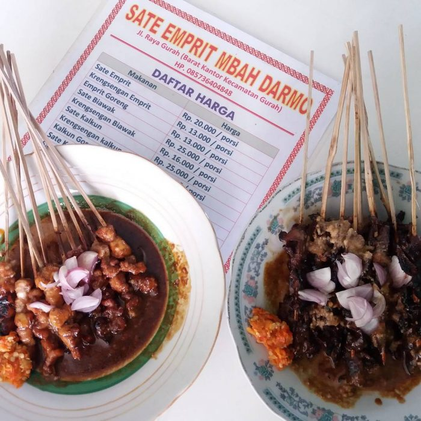
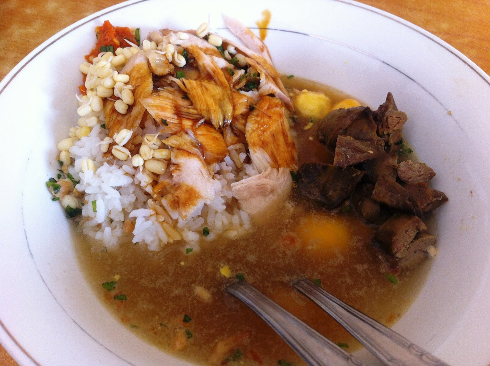

1. Nasi Pecel Sambel Tumpang
Pecel sambal tumpang ini sangat lezat dan sayang banget untuk kamu lewatkan. Di mana pun lokasinya, rasanya pasti akan memanjakan lidah. Salah satunya berada di Jalan Letjend Suprapto 107/55. Bedanya, nasi pecel khas Kediri ini terletak pada sambal tumpangnya yang terbuat dari fermentasi tempe. Dinikmati bersama rempeyek, kenikmatan pun akan bertambah.

2. Sate Emprit Mbah Darmo
Kamu yang menggemari sate daging ayam, kambing, sapi, maupun babi, mungkin cukup aneh mendengar kuliner sate satu ini. Emprit merupakan burung kecil atau biasa disebut burung pipit. Rasa dagingnya tak kalah lezat, meski ukuran daging burung emprit sangt kecil. Selain itu, ada juga krengsengan burung emprit yang rasanya sangat mantap. Lokasinya di Jalan Ahmad Yani, Wonojoyo, Gurah.

3. Soto Ayam Depot Kediri
Rumah makan legendaris ini berada tepat di pojokan perempatan deretan toko-toko Jalan Dhoho, Kediri. Warung soto ayam ini berdiri sejak 1926 dan selalu terlihat ramai. Soto dengan resep warisan keluarga dari Yogjakarta ini mempunyai kuah yang bening, kental, dan segar. Di dalamnya terdapat suwiran ayam kampung, ditaburi kecambah, dan seledri. Sebagai pelengkap tersedia jeroan, telur asin, dan tahu atau tempe goreng. Satu porsinya dibandrol sekitar Rp 15 ribu.
